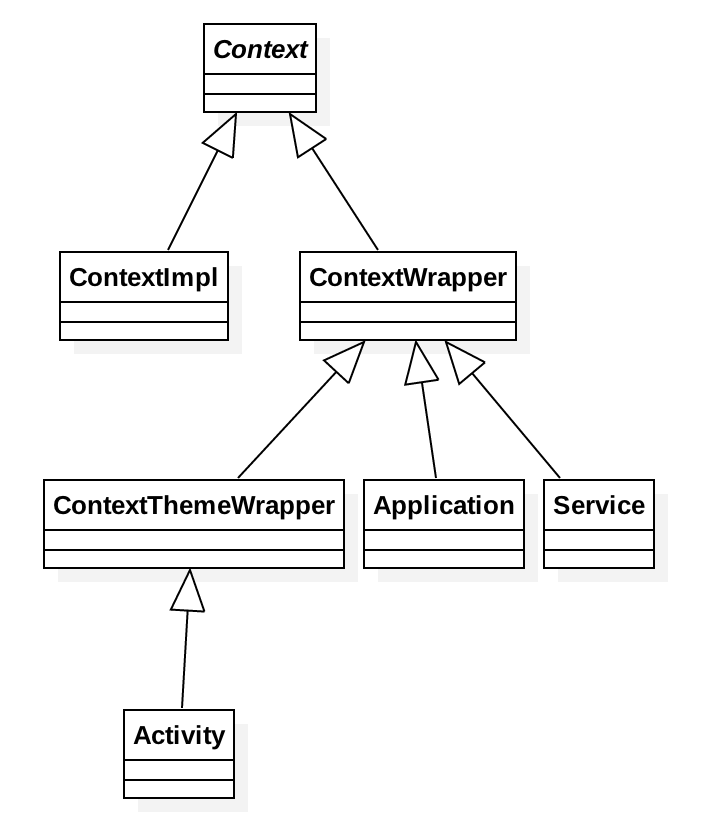

Context
Context 类结构图
（最常见的部分类）

Context 的用途
Activity、Service 和 BroadcastReceiver 等类并不像普通的 Java 对象 new 一个实例就能正常使用了，而是要有它们各自的上下文环境，即 Context。
它可以用于弹出 Toast、启动 Activity、启动 Service、发送广播、操作数据库等。
Context 的分类
由文首的图可知，Context 分为 Activity、Service 和 Application 三类。
一般情况下它们可以通用，例外情况：
启动 Activity 时，因为 Activity 需要有任务栈，一般需要 Activity 类型的 Context，如果使用 Application 或 Service 类型的 Context，需要 FLAG_ACTIVITY_NEW_TASK。
android.util.AndroidRuntimeException: Calling startActivity() from outside of an Activity context requires the FLAG_ACTIVITY_NEW_TASK flag.Dialog 必须在 Activity 上面弹出（除非是 System Alert 类型），此时只能使用 Activity 类型的 Context。
Layout Inflation 推荐使用 Activity 类型的 Context。
如下图：
| Context 类型 | Application | Activity | Service |
|---|---|---|---|
| Show a Dialog | No | Yes | No |
| Start an Activity | 不推荐 | Yes | 不推荐 |
| Layout Inflation | 不推荐 | Yes | 不推荐 |
| Start a Service | Yes | Yes | Yes |
| Send a Broadcast | Yes | Yes | Yes |
| Register Broadcast Receiver | Yes | Yes | Yes |
| Load Resource Values | Yes | Yes | Yes |
与 UI 相关的应优先使用 Activity 类型的 Context 处理，其它可通用。
防止内存泄漏
在 Application 类型 Context 满足需求的情况下，优先使用它。
不要让生命周期长于 Activity 的对象持有 Activity 的引用。
尽量不要在 Activity 中使用非静态内部类，因为非静态内部类会隐式持有外部类实例的引用，如果使用静态内部类，将外部实例引用作为弱引用持有。